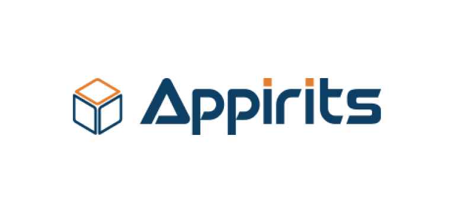

おすすめ
戦略的業務提携
東証グロース市場 上場「売れるネット広告社グループ（証券コード：9235）」と戦略的業務提携。上場企業に選ばれる技術力と信頼性で、新規開発・PoC・MVPをお任せください。
新規開発・PoC・MVP、こんな不安はありませんか？
要件が固まらない／作ってみないと分からない
仕様書だけでは完成イメージが共有できない
オフショアは品質・コミュニケーションが不安
開発スピードが出ず、意思決定が遅れる
作る前に"動くデモ"で確かめる、AIネイティブ開発
-
DAY 0
60-90分
PMによる直接ヒアリング
業務課題・KPI・世界観をその場で整理し実装可能性を即判断
-
DAY 3
3営業日
AIモック・UIプロトタイプ
主要画面と画面遷移を生成し社内合意を加速
-
WEEK 2
2週間
動くデモ・サービス世界観
実データに近いデモでUXまで含めた世界観を提示
-
MONTH 1
1ヶ月
MVP β版・KPI設定
本番投入可能なMVPを構築し成功指標を定義
-
想像で議論しない
-
本気度の証明
-
認識齟齬ゼロ
新規もこれからも。AI駆動開発とAIネイティブ開発を使い分け
AI駆動開発
活用ツール
- Claude Code
- Codex
- Gemini
- Cursor
- Jai1 Framework（JV-IT独自）
日本人PM直轄のオフショア受託開発体制
日本人PMがヒアリング〜デモ〜MVP開発までを一貫して担当し、上級エンジニアとQCがソースコード確認・テストで品質を担保します。
お客様
日本人PM
全体統括・窓口
上級エンジニア＋QC
コードレビュー・テスト
CMチーム
翻訳・進捗管理
インフラ
JV-ITが選ばれる3つの理由
3%
離職率
担当が変わらない業務継続性。業界平均20%に対し、5年にわたり低水準を維持しています。
PM
日本人PM直轄体制
ブリッジSE任せにせず、日本人PMが直轄で日本基準の品質管理を徹底します。
50%以上
AI活用率
全工程でAIを活用し、スピーディなMVP開発を実現します。
取引企業300社以上
上場企業からスタートアップまで、業種を問わずAI開発・受託開発のパートナーとして継続的にお取引いただいています。




AI開発の導入事例
2ヶ月のPoCデプロイから8年におよぶ長期のラボ型開発まで。規模もフェーズも異なる4つの事例をご紹介します。
Claude公式認定100名体制
CERT 01
Anthropic Academy 修了
全社員100%
履修コース：Claude API・Agent SDK・Claude Code・MCP・Prompt Engineering
CERT 02
CCA-F（Claude Certified Architect – Foundations）
上位メンバーが取得
第三者試験による客観的な実力認定です。
-
最新のClaude活用
常時アップデートに追随し、最新のClaude機能を業務に反映します。
-
属人化しない品質
全社員が共通の知識基盤を持ち、担当者に依存しない品質を担保します。
-
第三者認定の信頼
社内評価ではなく、第三者試験による客観的な実力証明です。
料金・進め方
まず小さくPoCから始められます。無理のない範囲から一緒にすり合わせていきます。
PoC/MVPの進め方
-
無料相談
現状の課題や目的をヒアリングし、進め方の方向性をすり合わせます。
-
小さくPoC
まずは最小の範囲で試作し、早い段階で実現性を確認します。
-
デモで確認
動くデモを見ながら、使い勝手や方向性を一緒に確認します。
-
MVPへ拡張
確認が取れた範囲から、本番運用に耐えるMVPへ段階的に広げます。
お見積もりの考え方
固定の料金表は設けておらず、対応範囲・規模・スピードに応じて案件ごとに個別に算出しています。まずは無料相談で、目的や制約をお聞かせください。
まず小さくPoCから始められます。
無料で相談するよくあるご質問
AIネイティブ開発とAI駆動開発は何が違いますか？
AIネイティブは新規/PoC/MVPを動くデモから最短で形にする手法。AI駆動は中〜大規模・既存改修で従来フローを高速化する手法。案件特性で使い分けます。
動くデモはどのくらいの期間で出てきますか？
最短数日でAIモック、2週間で実データに近い動くデモを提示します。
小さくPoCだけ依頼することはできますか？
可能です。まずPoCから始め、成果を見て段階的にMVP・本開発へ広げられます。
オフショアですが品質・コミュニケーションは大丈夫ですか？
日本人PMが直接窓口・指揮し、離職率3%で担当が変わりません。全社員がClaude公式認定を取得しています。
費用はどのように決まりますか？
対応範囲・規模・スピードに応じて個別に算出します。まずは無料相談でご要望をお聞かせください。
既存システムの改修・追加開発も頼めますか？
可能です。中〜大規模・既存改修はAI駆動開発で品質・SLAを重視して対応します。
会社情報
株式会社JV-ITホールディングス
日本法人
- 所在地
- 東京都新宿区四谷3-11 光徳ビル201
- 設立
- 2018年5月21日
- 資本金
- 3,310万円
- 売上高
- 4.12億円（2024年12月期）
- 事業内容
- システム受託開発 等
JV-IT TECHS CO., LTD
ベトナム法人
- 所在地
- ホーチミン市（2nd Floor, Ework Building, 103A-105-107 Nguyen Thong St., Ward.9, Dist.3, HCMC, Vietnam）
- 設立
- 2020年12月2日
- 従業員
- 87名（2025年11月時点）
無料相談・お問い合わせ
お問い合わせいただいた内容には、1営業日以内にご返信いたします。まずはお気軽にご相談ください。